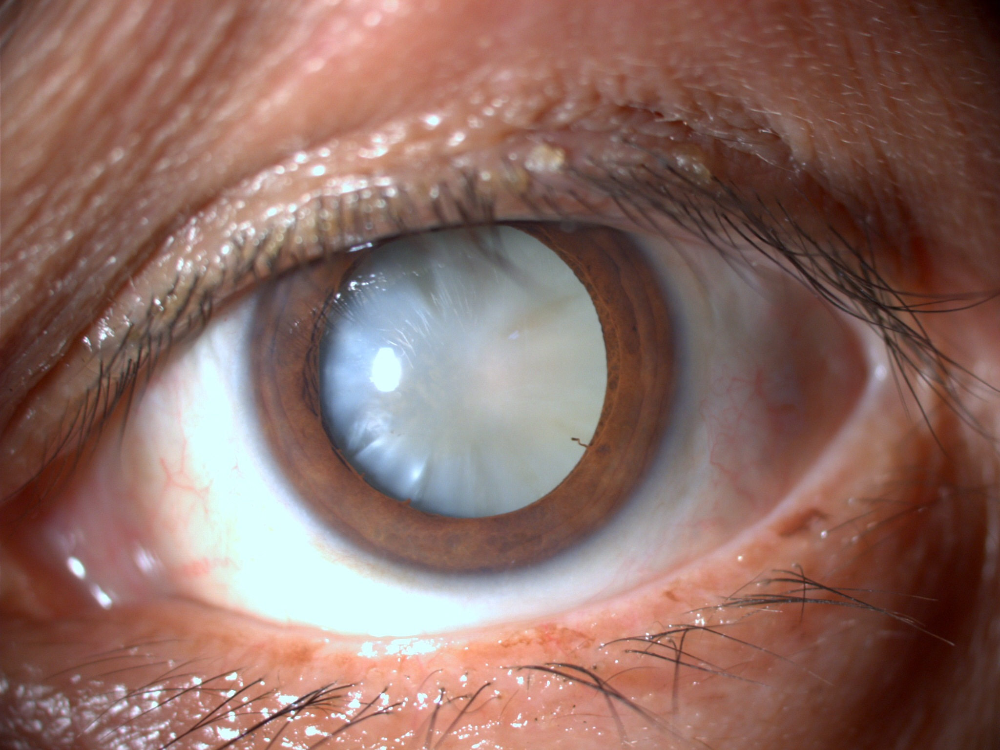
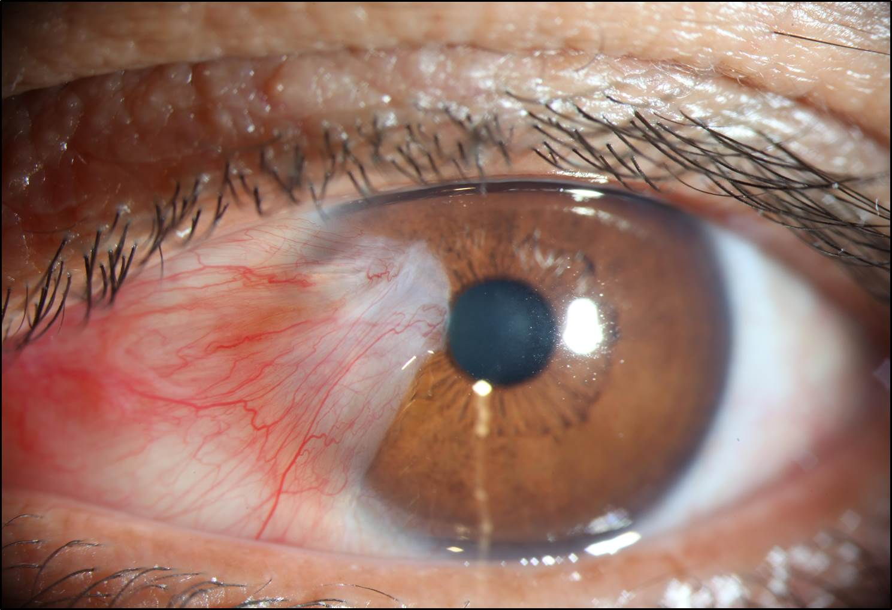

Nos nossos olhos, existe uma estrutura chamada “cristalino” que é totalmente translúcida. Este cristalino
funciona como uma lente dentro dos nossos olhos proporcionando foco da visão para longe ou para perto.
Com o passar do tempo, este cristalino começa a deixar de ser transparente e passa a ser opaco, aí passa
a ser chamado de “Catarata”. A catarata é o cristalino que se opacificou. Com isso, a visão começa a
sofrer perdas de diversas formas, seja nas atividades do dia a dia, seja prejudicando a visão em ambientes
muito claros, seja dificultando a leitura ou até mesmo, em ver a legenda da TV. Existem alguns tipos de
Catarata, a mais Comum é a relacionada à idade. Em geral, a partir de 50 anos se inicia o processo de
opacidade, já há uma leve perda da transparência, porém, só denomina-se catarata quando a opacidade
fica mais acentuada causando perda ou desconforto da visão.
Agora que entendemos, queremos a solução!
A única solução definitiva para a catarata é o procedimento cirúrgico. A cirurgia será indicada pelo
seu Oftalmologista de acordo com a sua queixa e exames realizados. Esta cirurgia consiste em remover
o cristalino opaco (catarata) através de uma microincisão (que não requer sutura) e a seguir, será
necessário o implante de uma lente que substituirá o seu cristalino, ou seja, uma lente intraocular.
A tecnologia da cirurgia vem evoluindo e nós somo os maiores beneficiados.
O grau desta lente intra-ocular é obtido através de exames que indicarão o grau ideal para cada um, ou
seja, é uma lente totalmente personalizada. Com esta lente, podemos corrigir o grau utilizado
anteriormente para longe (óculos) e até mesmo o grau de perto, sendo possível estar praticamente livre
dos óculos após a cirurgia.
Importante saber que:
Raramente a catarata pode ser percebida a olho nu. Isto só ocorre quando ela está muito avançada (madura).
Muitas pessoas confundem catarata com Pterígeo.
Portanto é importante ressaltar que o que é popularmente denominado de catarata, trata-se na verdade de pterígio,
que é a outra patologia e que nada tem a ver com a catarata de fato.

Catarata Madura

Pterígio